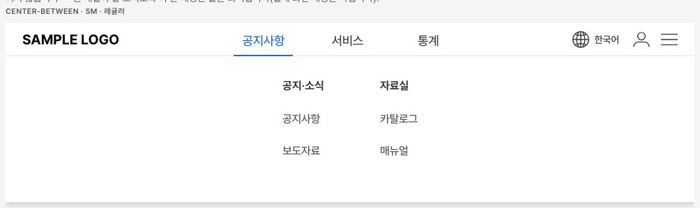
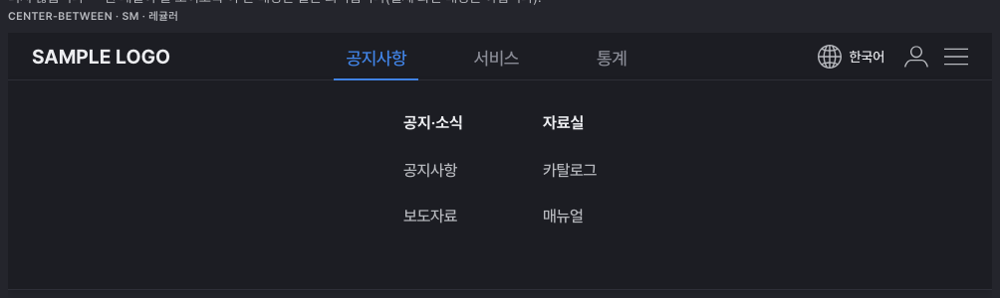
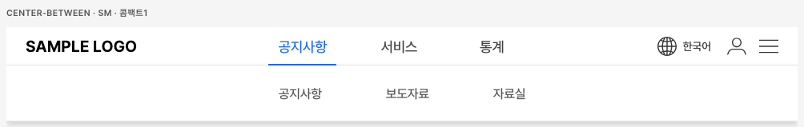
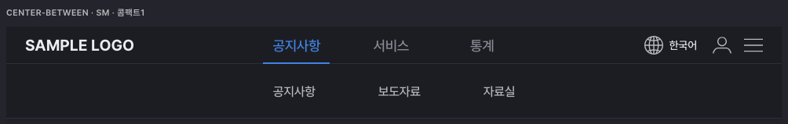
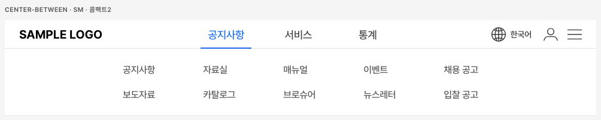
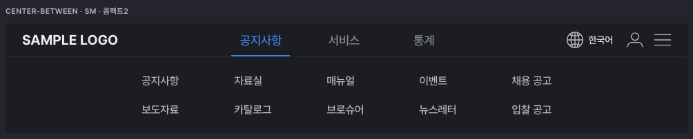

GNB · GNB 하위 메뉴 · GNB 하위 메뉴 항목 — 지금 개발자에게 나가는 배포본을 그대로 띄운 화면입니다. 메뉴에 마우스를 올린 상태로 찍었습니다. 직접 만져보려면 디자인가이드 GNB 화면을 여세요.
9/10에 고친 여섯 가지 — 지금 화면에 그대로 살아 있습니다
①로고 · 메뉴 · 오른쪽 아이콘이 가운데 정렬로 셋으로 나뉨②판이 펼쳐질 자리를 미리 비워 둠 — 열고 닫아도 아래가 밀리지 않음(실측 0px)③예시 칸 배경만 옅은 회색 — 흰 판이 보이게④선택된 메뉴의 파란 밑줄이 회색 선 아래로 흘러내리지 않음⑤공지사항도 하위 메뉴를 가짐 — 세 메뉴가 같은 종류의 판을 엶⑥판의 굵은 제목(카테고리)은 색이 바뀌지 않음 — 누를 수 없는 글자
판 세 종류 — 라이트 / 다크
한 GNB 안에서는 모든 메뉴가 같은 종류의 판을 엽니다.
기본형

라이트

다크
콤팩트 1

라이트

다크
콤팩트 2

라이트

다크
정해주실 것 하나 — 판 제목 글자 1px
지난 9/30 "한글이 위로 떠 보이는 곳만 1px 내리기"를 할 때, 판 안의 작은 항목 글자만 내리고 굵은 제목은 빠졌습니다. 그래서 제목과 첫 항목 사이가 1px 더 벌어져 있습니다. 3배로 키운 그림입니다.